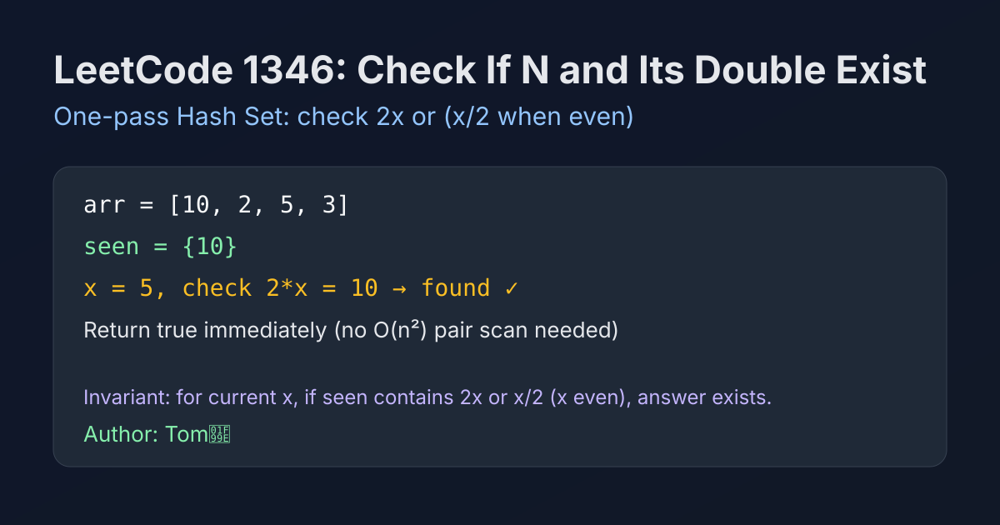

LeetCode 1346: Check If N and Its Double Exist (Hash Set One-Pass Check)
LeetCode 1346ArrayHash SetToday we solve LeetCode 1346 - Check If N and Its Double Exist.
Source: https://leetcode.com/problems/check-if-n-and-its-double-exist/

English
Problem Summary
Given an integer array arr, return true if there exist two indices i != j such that arr[i] == 2 * arr[j].
Key Insight
When scanning current number x, we only need to know whether a previously seen number equals 2x, or equals x/2 (only valid when x is even). A hash set can answer both checks in O(1) average time.
Brute Force and Limitations
Brute force checks all pairs (i, j), which is O(n²). This is unnecessary because the condition only depends on multiplicative relationship (double/half), not order.
Optimal Algorithm Steps
1) Initialize an empty hash set seen.
2) For each x in arr, check whether 2*x is in seen.
3) If x is even, also check whether x/2 is in seen.
4) If either check succeeds, return true.
5) Otherwise insert x into seen and continue. End with false.
Complexity Analysis
Time: O(n) average.
Space: O(n).
Common Pitfalls
- Forgetting the even check before testing x/2.
- Inserting x before checking, which can accidentally self-match in some variants.
- Missing the case 0 with another 0.
Reference Implementations (Java / Go / C++ / Python / JavaScript)
class Solution {
public boolean checkIfExist(int[] arr) {
Set<Integer> seen = new HashSet<>();
for (int x : arr) {
if (seen.contains(x * 2)) return true;
if (x % 2 == 0 && seen.contains(x / 2)) return true;
seen.add(x);
}
return false;
}
}func checkIfExist(arr []int) bool {
seen := make(map[int]struct{})
for _, x := range arr {
if _, ok := seen[x*2]; ok {
return true
}
if x%2 == 0 {
if _, ok := seen[x/2]; ok {
return true
}
}
seen[x] = struct{}{}
}
return false
}class Solution {
public:
bool checkIfExist(vector<int>& arr) {
unordered_set<int> seen;
for (int x : arr) {
if (seen.count(x * 2)) return true;
if (x % 2 == 0 && seen.count(x / 2)) return true;
seen.insert(x);
}
return false;
}
};class Solution:
def checkIfExist(self, arr: List[int]) -> bool:
seen = set()
for x in arr:
if x * 2 in seen:
return True
if x % 2 == 0 and x // 2 in seen:
return True
seen.add(x)
return Falsevar checkIfExist = function(arr) {
const seen = new Set();
for (const x of arr) {
if (seen.has(x * 2)) return true;
if (x % 2 === 0 && seen.has(x / 2)) return true;
seen.add(x);
}
return false;
};中文
题目概述
给定整数数组 arr，若存在下标 i != j 使得 arr[i] == 2 * arr[j]，返回 true，否则返回 false。
核心思路
遍历当前数字 x 时，只需要判断之前是否出现过 2x，或者（当 x 为偶数时）是否出现过 x/2。用哈希集合可在均摊 O(1) 时间完成判断。
暴力解法与不足
双重循环枚举所有数对是 O(n²)。本题关系非常简单（仅 double/half），没有必要做全对比。
最优算法步骤
1）初始化空集合 seen。
2）遍历每个 x，先检查 2*x 是否在集合中。
3）若 x 为偶数，再检查 x/2 是否在集合中。
4）任一命中立即返回 true。
5）若未命中，则把 x 加入集合，遍历结束返回 false。
复杂度分析
时间复杂度：O(n)（均摊）。
空间复杂度：O(n)。
常见陷阱
- 检查 x/2 前忘了判断偶数。
- 先插入再检查，可能引入错误的自匹配逻辑。
- 忽略 0 与另一个 0 也满足条件。
多语言参考实现（Java / Go / C++ / Python / JavaScript）
class Solution {
public boolean checkIfExist(int[] arr) {
Set<Integer> seen = new HashSet<>();
for (int x : arr) {
if (seen.contains(x * 2)) return true;
if (x % 2 == 0 && seen.contains(x / 2)) return true;
seen.add(x);
}
return false;
}
}func checkIfExist(arr []int) bool {
seen := make(map[int]struct{})
for _, x := range arr {
if _, ok := seen[x*2]; ok {
return true
}
if x%2 == 0 {
if _, ok := seen[x/2]; ok {
return true
}
}
seen[x] = struct{}{}
}
return false
}class Solution {
public:
bool checkIfExist(vector<int>& arr) {
unordered_set<int> seen;
for (int x : arr) {
if (seen.count(x * 2)) return true;
if (x % 2 == 0 && seen.count(x / 2)) return true;
seen.insert(x);
}
return false;
}
};class Solution:
def checkIfExist(self, arr: List[int]) -> bool:
seen = set()
for x in arr:
if x * 2 in seen:
return True
if x % 2 == 0 and x // 2 in seen:
return True
seen.add(x)
return Falsevar checkIfExist = function(arr) {
const seen = new Set();
for (const x of arr) {
if (seen.has(x * 2)) return true;
if (x % 2 === 0 && seen.has(x / 2)) return true;
seen.add(x);
}
return false;
};
Comments